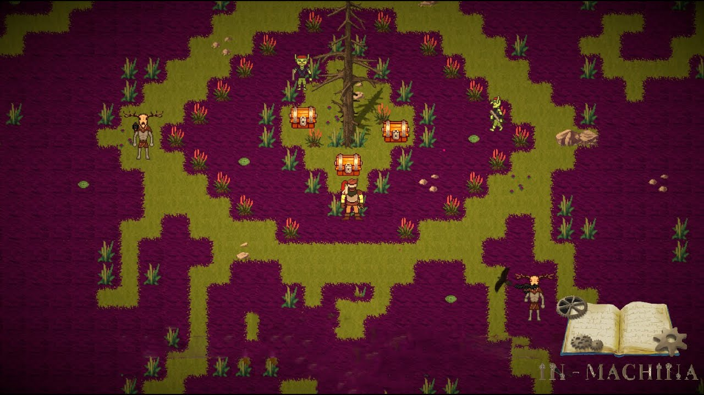

In_Machina
Les légendes racontent que quelque chose croît dans les Bois Brumeux. Une mystérieuse corruption fait des ravages dans ces terres autrefois florissantes. Saurez-vous l’arreter ?

In_Machina est un Roguelite 2D survival à l’esthétique old school.
Le projet In_Machina à été réalisé par moi, un autre Game Designer et une Game Artiste à la fin de notre première année à LISAA. J’ai travaillé sur le Game Design, le Level Design, l’Equilibrage, la Programmation (Unity).
Nous avons décidé de partir sur un roguelite 2D en nous inspirant de Vampire Survivors. Nous voulions donc créer un rogue-lite, fun, juicy, accessible avec une narration mystérieuse.
Pour rendre le jeu fun nous avons choisi de miser sur l’abondance de stratégies et de builds possibles, sur le nombre d’items à acheter pour s’améliorer, et sur le nombre de mécaniques environnementales.
La juiciness du jeu passe par les effets visuels (shake-screen, animation, etc) mais aussi auditifs grâce au Voice Acting. En effet, le narrateur du jeu interviendra souvent pour commenter les actions du joueur.
Concernant l’accessibilité, nous avons décidé de ne jouer qu’avec 2 boutons et le joystick.
Le mystère est le pilier principal de notre jeu. En effet, des secrets sont dissimulés dans le Level Design, dans la Narration, dans l’UI, et dans les systèmes de jeu.